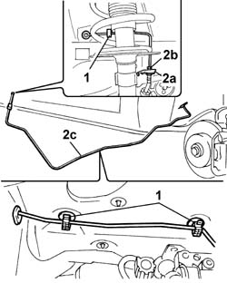

3340B56 RIGID PIPE from hydraulic CONTROL UNIT to RIGHT FRONT BRAKE - R.R.
- Path
- Procedures > 33 BRAKING SYSTEM > 3340 ANTI-LOCK BRAKE SYSTEM (ABS) > 3340B ABS SYSTEM PIPES > 3340B56 RIGID PIPE from hydraulic CONTROL UNIT to RIGHT FRONT BRAKE - R.R.
- Kind
- repair procedure (removal / refitting; the operation number is the code)
- Applies to
- all engines; all production periods
- Interactive page
- https://sloeber94.github.io/elrnDB-fPnd/en/#/2752765
Applies to: all engines; all production periods
 Removing
Removing
 Refitting
Refitting3330C34 brake fluid reservoir - r + r and wash inside - versions with r/h drive and abs
5530B56 BATTERY DRIP TRAY COVER - R.R.
5530B52 Battery DRIP TRAY/SUPPORT - R.R.
1048A10 air cleaner filtering element - replace
3330C14 (PUMP) - MASTER CYLINDER .R.R for versions with A.B.S.
3340A12 A'B.S. system. - electronic and hydraulic CONTROL UNIT R.R.
1. Release the pipe from the clips.
2. Remove clip (2a), unscrew connector (2b) joining it to the flexible section, then remove the right front brake rigid pipe (2c) from the wheel compartment.

Applies to: all engines; all production periods
Refitting
RemovingWorking in the wheel compartment, fit the rigid pipe from the hydraulic unit to the front right brake.
Working in the right front wheel compartment, tighten the connector on the rigid pipe to the flexible section of the left front brake pipe.
 | Fastening | Component | Ø | Value (daNm) |
|---|---|---|---|---|
- | Connector | BRAKING SYSTEM FITTING/S | M10 | 1.6 |
Secure the rigid section to the bracket on the body using the retaining clip.
Secure the rigid pipe to the body using the plastic retaining clips disconnected previously.
3340A12 A'B.S. system. - electronic and hydraulic CONTROL UNIT R.R.
3330C14 (PUMP) - MASTER CYLINDER .R.R for versions with A.B.S.
1048A10 air cleaner filtering element - replace
5530B52 Battery DRIP TRAY/SUPPORT - R.R.
5530B56 BATTERY DRIP TRAY COVER - R.R.
3330C34 brake fluid reservoir - r + r and wash inside - versions with r/h drive and abs
0010T64 brake and or clutch fluid check level and top up as necessary
Topics linked from this page (10)
- 0010T64 brake and or clutch fluid check level and top up as necessary
- 0010T65 hydraulic brake system bleed air
- 1048A10 air cleaner filtering element - replace
- 3330C14 (PUMP) - MASTER CYLINDER .R.R for versions with A.B.S.
- 3330C34 brake fluid reservoir - r + r and wash inside - versions with r/h drive and abs
- 3340A12 A'B.S. system. - electronic and hydraulic CONTROL UNIT R.R.
- 4450B04 right front wheel r r
- 5530B10 battery - r+r
- 5530B52 Battery DRIP TRAY/SUPPORT - R.R.
- 5530B56 BATTERY DRIP TRAY COVER - R.R.